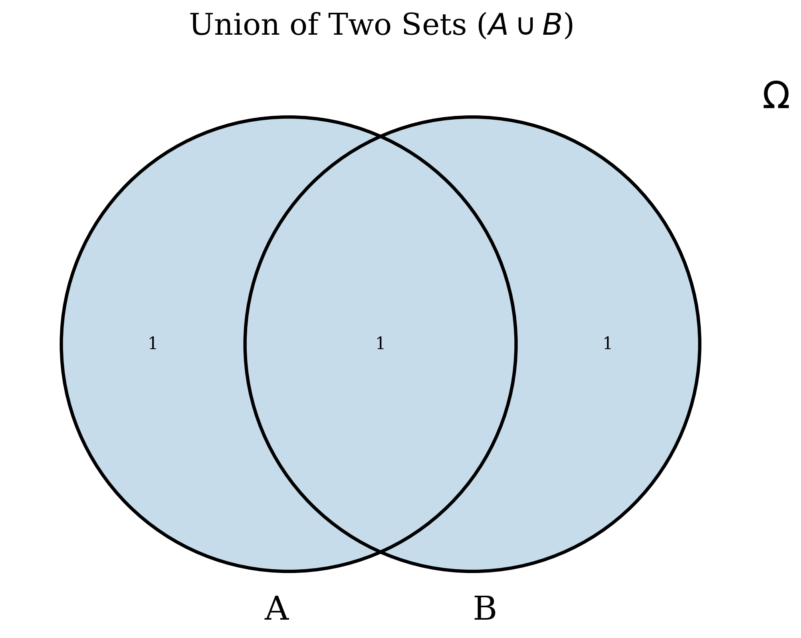
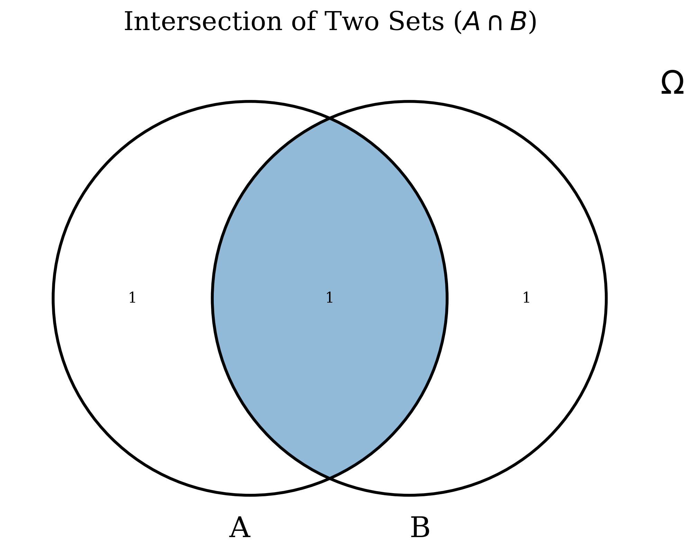
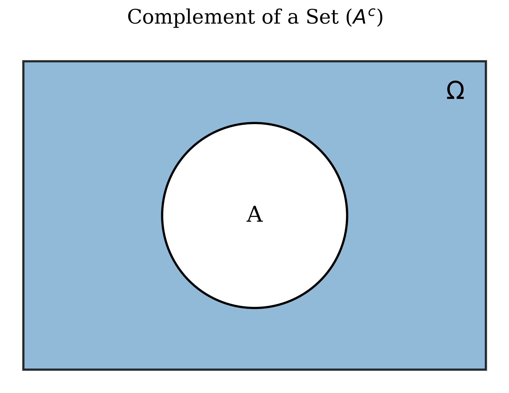
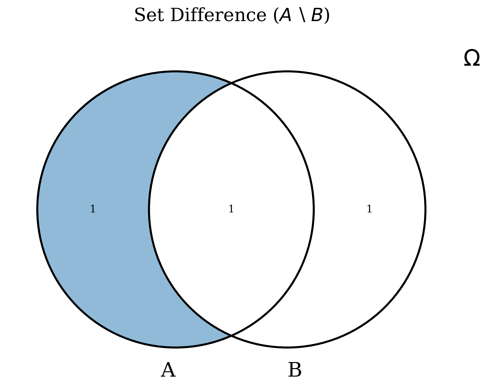
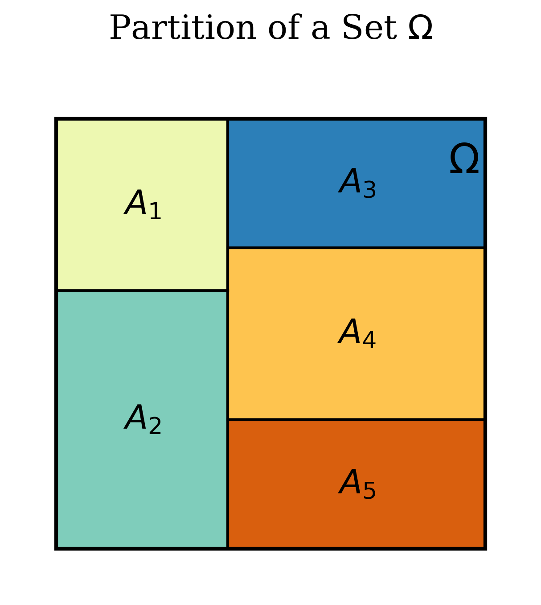
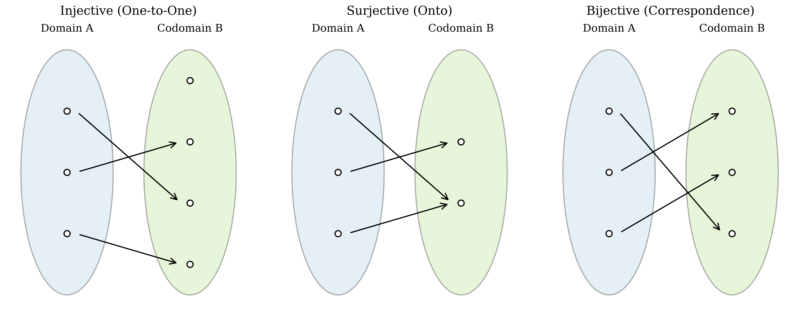
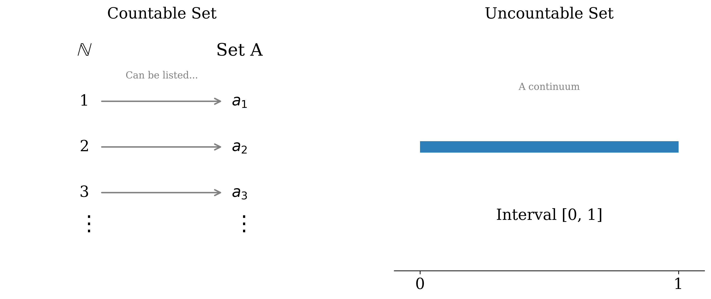
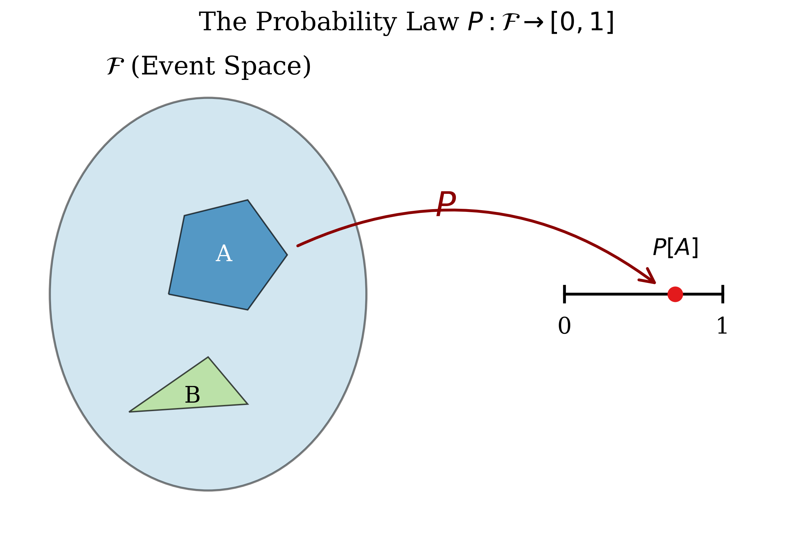
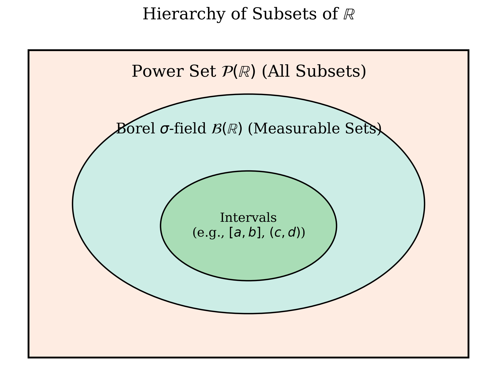

This note presents fundamental concepts in Set Theory and Probability Theory. Material from CSE422 class (taught by Md. Shahriar Karim, Assistant Professor, North South University) lectures is enhanced with definitions, theorems, examples, and proofs from faculty notes [1][2] and textbooks by Ross [3] and Chan [4]. Topics include set operations, cardinality, probability spaces, axioms, corollaries, probability assignment (pmf/pdf), measure zero sets, and conditional probability.
Set Theory
Set theory forms the fundamental language and mathematical basis for understanding probability. We begin by defining the core concepts.
Sets and Elements
A set is a collection of distinct objects, considered as an entity in itself. The objects within the set are called its elements or members. Sets are typically denoted by capital letters (e.g., \(A, B, S\)) and their elements by lowercase letters or symbols.
A set is a collection of distinct elements. We often denote a set by listing its elements within curly braces [1][4].
where \(\xi_i\) is the \(i\)-th element in the set.
The elements in a set are distinct (no repetitions) and unordered (the order in which elements are listed does not matter).
- \(A = \{2, 7, 9\}\) is a finite set of numbers.
- \(B = \{\text{apple, orange, pear}\}\) is a finite set of objects.
- \(C = \{2, 4, 6, 8, \ldots\}\) is an infinite set (the set of positive even integers).
If an object \(\xi\) is an element of a set \(A\), we write \(\xi \in A\). If \(\xi\) is not an element of \(A\), we write \(\xi \notin A\).
Describing Sets
Sets can be described explicitly by listing elements or implicitly using properties.
A set can be defined by specifying a property that its elements must satisfy.
This reads as "A is the set of all elements \(x\) such that property \(P(x)\) is true."
- \(A = \{1, 2, 3, 4, 5, 6, 7, 8, 9\}\) can be written as \(A = \{x \mid x \in \mathbb{Z}^+ \text{ and } 1 \le x \le 9\}\).
- The set of even integers can be written as \(E = \{x \mid x = 2k \text{ for some integer } k\}\).
Fundamental Set Concepts
Two sets \(A\) and \(B\) are equal (\(A = B\)) if and only if they contain exactly the same elements [1][3].
The cardinality of a finite set \(A\), denoted \(|A|\), is the number of distinct elements in the set [1].
For \(A = \{2, 7, 9\}\), \(|A| = 3\).
In a particular context, the Universal Set (\(\Omega\) or \(S\)) is the set containing all possible elements under consideration [1][4].
The Empty Set (\(\emptyset\) or \(\{\}\)) is the unique set containing no elements [1][3].
Set \(A\) is a subset of set \(B\) if every element of \(A\) is also an element of \(B\) [4]. If \(A \subseteq B\) and \(A \ne B\), then \(A\) is a proper subset of \(B\), denoted \(A \subset B\).
Two sets \(A\) and \(B\) are equal if and only if \(A \subseteq B\) and \(B \subseteq A\) [4].
Set Operations
These operations allow us to combine or modify sets.
The union of sets \(A\) and \(B\) is the set containing all elements that are in \(A\), or in \(B\), or in both [3].
If \(A = \{1, 2, 3\}\) and \(B = \{3, 4, 5\}\), then \(A \cup B = \{1, 2, 3, 4, 5\}\).

The intersection of sets \(A\) and \(B\) is the set containing all elements that are common to both \(A\) and \(B\) [3].
If \(A = \{1, 2, 3\}\) and \(B = \{3, 4, 5\}\), then \(A \cap B = \{3\}\).
If \(C = \{1, 2\}\) and \(D = \{3, 4\}\), then \(C \cap D = \emptyset\).

Relative to a universal set \(\Omega\), the complement of \(A\) is the set of all elements in \(\Omega\) that are not in \(A\) [1][3].

The difference of sets \(A\) and \(B\) is the set containing all elements that are in \(A\) but not in \(B\) [1][4].
Note that \(A \setminus B = A \cap B^c\).

Disjoint Sets and Partitions
Two sets \(A\) and \(B\) are disjoint (or mutually exclusive) if they have no elements in common, i.e., \(A \cap B = \emptyset\) [1][4].
A collection of non-empty sets \(\{A_1, \ldots, A_n\}\) forms a partition of a set \(\Omega\) if [1][4]:
- The sets are pairwise disjoint: \(A_i \cap A_j = \emptyset\) for all \(i \ne j\).
- The sets are collectively exhaustive: \(\displaystyle \bigcup_{i=1}^n A_i = \Omega\).

Set Algebra Properties
These properties are essential for manipulating sets.
- Commutative Laws: \(A \cup B = B \cup A\); \(A \cap B = B \cap A\) [1][4].
- Associative Laws: \(A \cup (B \cup C) = (A \cup B) \cup C\); \(A \cap (B \cap C) = (A \cap B) \cap C\) [1][4].
- Distributive Laws: \(A \cap (B \cup C) = (A \cap B) \cup (A \cap C)\); \(A \cup (B \cap C) = (A \cup B) \cap (A \cup C)\) [1][4].
- De Morgan's Laws: \((A \cup B)^c = A^c \cap B^c\); \((A \cap B)^c = A^c \cup B^c\) [1][4].
Cardinality and Countability
Understanding the "size" of sets, especially infinite sets, is important for defining sample spaces.
Equicardinality and Bijective Functions
Two sets \(A\) and \(B\) are equicardinal (have the same cardinality) if there exists a bijective function \(f: A \to B\) between them [1][4].
A function \(f: A \to B\) is bijective (or a one-to-one correspondence) if it is both:

Types of Sets by Cardinality
- Finite Set: A set that is equicardinal with \(\{1, 2, \ldots, n\}\) for some non-negative integer \(n\). Its cardinality is \(n\) [1].
- Infinite Set: A set that is not finite [1].
A set is countable if it is either finite or countably infinite [4].
Every countably infinite set can be listed as a sequence.

The Probability Space \((\Omega, \mathcal{F}, \mathbb{P})\)
Probability theory provides a mathematical framework for modeling experiments with random outcomes. This framework is the probability space, a triplet \((\Omega, \mathcal{F}, \mathbb{P})\) [2][4].
Component 1: The Sample Space (\(\Omega\))
The Sample Space (\(\Omega\)) is the set of all possible outcomes of a random experiment [3][4]. Each outcome \(w\) is an element of \(\Omega\) (\(w \in \Omega\)). A sample space must be exhaustive (includes all possibilities) and its elements must be mutually exclusive (distinct outcomes) [4].
Component 2: The Event Space (\(\mathcal{F}\))
An Event (\(A\)) is a subset of the sample space (\(A \subseteq \Omega\)) [3][4]. An event is said to occur if the outcome of the experiment is an element of that event.
Experiment: Roll a die, \(\Omega = \{1, 2, 3, 4, 5, 6\}\).
- Event \(A\): "An even number is rolled." \(A = \{2, 4, 6\}\).
- Event \(B\): "A number less than 3 is rolled." \(B = \{1, 2\}\).
- Event \(C\): "The number 5 is rolled." \(C = \{5\}\).
The Event Space (\(\mathcal{F}\)) is a collection of subsets of \(\Omega\) (i.e., a set of events) that satisfies the properties of a \(\sigma\)-field (or \(\sigma\)-algebra). This ensures that we can consistently assign probabilities and perform operations like complements and unions [4].
A collection \(\mathcal{F}\) of subsets of \(\Omega\) is a \(\sigma\)-field if:
- \(\Omega \in \mathcal{F}\) (The sample space itself is an event).
- If \(A \in \mathcal{F}\), then \(A^c \in \mathcal{F}\) (Closed under complementation).
- If \(A_1, A_2, \ldots \in \mathcal{F}\) (a countable sequence), then \(\displaystyle \bigcup_{i=1}^{\infty} A_i \in \mathcal{F}\) (Closed under countable unions).
For discrete sample spaces, \(\mathcal{F}\) is usually the power set \(P(\Omega)\) (the set of all subsets) [1][4]. For continuous spaces like \(\mathbb{R}\), \(\mathcal{F}\) is the Borel \(\sigma\)-field \(\mathcal{B}(\mathbb{R})\), generated by intervals [2][4].
Component 3: The Probability Law (\(\mathbb{P}\))
The Probability Law or Probability Measure \(\mathbb{P}\) is a function that assigns a real number \(\mathbb{P}[A]\) to each event \(A \in \mathcal{F}\), satisfying the Axioms of Probability [2][4].
It quantifies the likelihood of each measurable event in \(\mathcal{F}\), serving as a measure of its relative size within the sample space [4].

Measurable Sets and the Need for a \(\sigma\)-Field
Not every subset of a sample space can be consistently assigned a probability. To avoid contradictions, probability is defined only on a specific collection of subsets \(\mathcal{F}\) called a \(\sigma\)-field.
The sets in \(\mathcal{F}\) are called measurable sets. A probability measure \(\mathbb{P}\) assigns values only to these measurable events, not to arbitrary subsets [4].
In continuous sample spaces such as \(\mathbb{R}\), the event space is usually the Borel \(\sigma\)-field \(\mathcal{B}(\mathbb{R})\), which contains intervals and any set formed from them using countable unions, intersections, and complements.
Every interval in \(\mathbb{R}\) such as \((0,1)\) or \([2,\infty)\) is measurable. However, there exist subsets of \(\mathbb{R}\) that are not measurable, and probability cannot be meaningfully assigned to them.

Intuitively, probability measures the likelihood of measurable events. A \(\sigma\)-field ensures that this measurement behaves consistently.
The Axioms of Probability
Any function \(\mathbb{P}: \mathcal{F} \to [0, 1]\) must satisfy the following three axioms to be considered a valid probability measure [3][4].
For any event \(A \in \mathcal{F}\),
The probability assigned to the entire sample space is 1.
For any countable sequence of pairwise disjoint events \(\{A_1, A_2, \ldots\} \subseteq \mathcal{F}\) (i.e., \(A_i \cap A_j = \emptyset\) for all \(i \ne j\)), the probability of their union is the sum of their individual probabilities.
Axiom III implies finite additivity: For any finite collection of pairwise disjoint events \(A_1, \ldots, A_n\),
In particular, for two disjoint events \(A\) and \(B\), \(\mathbb{P}[A \cup B] = \mathbb{P}[A] + \mathbb{P}[B]\) [4].
Corollaries from the Axioms
These fundamental properties are direct consequences of the axioms.
For any event \(A\), \(\mathbb{P}[A^c] = 1 - \mathbb{P}[A]\) [2][3][4].
Proof:
Since \(A\) and \(A^c\) form a partition of \(\Omega\) (they are disjoint and \(A \cup A^c = \Omega\)), Axioms II and III (finite additivity) give:
Rearranging yields the result.
\(\mathbb{P}[\emptyset] = 0\) [2][3][4].
Proof:
Since \(\emptyset = \Omega^c\), apply Corollary 1: \(\mathbb{P}[\emptyset] = \mathbb{P}[\Omega^c] = 1 - \mathbb{P}[\Omega] = 1 - 1 = 0\).
If \(A \subseteq B\), then \(\mathbb{P}[A] \le \mathbb{P}[B]\) [4].
Proof:
We can write \(B = A \cup (B \setminus A)\). The sets \(A\) and \(B \setminus A\) are disjoint. By Axiom III, \(\mathbb{P}[B] = \mathbb{P}[A] + \mathbb{P}[B \setminus A]\). Since \(\mathbb{P}[B \setminus A] \ge 0\) by Axiom I, it follows that \(\mathbb{P}[B] \ge \mathbb{P}[A]\).
For any two events \(A\) and \(B\):
Proof:
We can write \(A \cup B\) as the union of three disjoint sets: \((A \setminus B)\), \((B \setminus A)\), and \((A \cap B)\).
Thus, \(\mathbb{P}[A \cup B] = \mathbb{P}[A \setminus B] + \mathbb{P}[B \setminus A] + \mathbb{P}[A \cap B]\).
Also, \(A = (A \setminus B) \cup (A \cap B)\) (disjoint union), so \(\mathbb{P}[A] = \mathbb{P}[A \setminus B] + \mathbb{P}[A \cap B]\), which implies \(\mathbb{P}[A \setminus B] = \mathbb{P}[A] - \mathbb{P}[A \cap B]\).
Similarly, \(\mathbb{P}[B \setminus A] = \mathbb{P}[B] - \mathbb{P}[A \cap B]\).
Substituting these into the first equation gives:
which simplifies to \(\mathbb{P}[A \cup B] = \mathbb{P}[A] + \mathbb{P}[B] - \mathbb{P}[A \cap B]\).
Conditional Probability
Conditional probability allows us to update the probability of an event based on the knowledge that another event has occurred.
Definition
Given two events \(A\) and \(B\), with \(\mathbb{P}[B] > 0\), the conditional probability of \(A\) given \(B\) is defined as:
Intuitively, knowing that \(B\) has occurred restricts the relevant sample space to just the outcomes within \(B\). \(\mathbb{P}[A \mid B]\) measures the proportion of the probability mass within \(B\) that also corresponds to outcomes in \(A\).
Conditional Probability as a Valid Probability Measure
For a fixed event \(B\) with \(\mathbb{P}[B] > 0\), the function \(P_B(\cdot) = \mathbb{P}[\cdot \mid B]\) defines a new, valid probability measure on the original sample space \(\Omega\) and event space \(\mathcal{F}\). It satisfies the three axioms [2].
- Non-negativity: For any event \(A\), \(\mathbb{P}[A \cap B] \ge 0\) (Axiom I for \(\mathbb{P}\)) and \(\mathbb{P}[B] > 0\). Therefore, \(P_B(A) = \dfrac{\mathbb{P}[A \cap B]}{\mathbb{P}[B]} \ge 0\).
- Normalization: We need to show \(P_B(\Omega) = 1\). \(P_B(\Omega) = \mathbb{P}[\Omega \mid B] = \dfrac{\mathbb{P}[\Omega \cap B]}{\mathbb{P}[B]}\). Since \(B \subseteq \Omega\), \(\Omega \cap B = B\). Thus, \(P_B(\Omega) = \dfrac{\mathbb{P}[B]}{\mathbb{P}[B]} = 1\).
- Countable Additivity: Let \(A_1, A_2, \ldots\) be a sequence of pairwise disjoint events. We need to show \(P_B(\bigcup A_i) = \sum P_B(A_i)\).
\[\begin{align} P_B\left(\bigcup_{i=1}^{\infty} A_i\right) &= \mathbb{P}\left[\bigcup_{i=1}^{\infty} A_i \;\middle|\; B\right] \\ &= \frac{\mathbb{P}\left[\left(\bigcup_{i=1}^{\infty} A_i\right) \cap B\right]}{\mathbb{P}[B]} \\ &= \frac{\mathbb{P}\left[\bigcup_{i=1}^{\infty} (A_i \cap B)\right]}{\mathbb{P}[B]} \end{align}\]
Since \(A_i\) are disjoint, the events \((A_i \cap B)\) are also disjoint. Applying Axiom III for \(\mathbb{P}\):
\[\begin{align} P_B\left(\bigcup_{i=1}^{\infty} A_i\right) &= \frac{\sum_{i=1}^{\infty} \mathbb{P}[A_i \cap B]}{\mathbb{P}[B]} \\ &= \sum_{i=1}^{\infty} \frac{\mathbb{P}[A_i \cap B]}{\mathbb{P}[B]} \\ &= \sum_{i=1}^{\infty} \mathbb{P}[A_i \mid B] = \sum_{i=1}^{\infty} P_B(A_i) \end{align}\]
Thus, \(P_B(\cdot)\) is a valid probability measure.